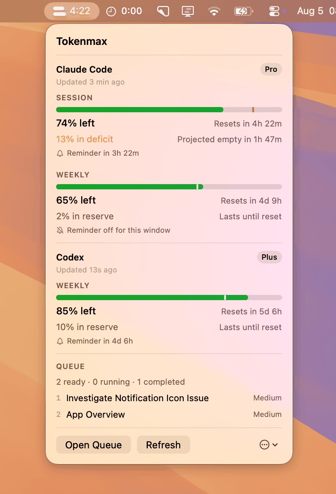

macOS menu bar · Claude Code & Codex
Claude Code gives you a five-hour window. Whatever is left in it when the clock runs out is simply gone. Tokenmax puts what remains, and how long there is to spend it, in your menu bar.
Meters and the time left in the window. The bars carry how much is left; the countdown carries how long there is to spend it. Two or three bars, each showing a quota you pick — Claude session, Claude week, Codex week. Inside your reminder lead time, with quota still worth using, they turn amber: now is a good moment to spend this.

The problem
There is no usage subcommand in the Claude Code CLI, and session
transcripts carry no rate-limit state. So the two things you actually need to
plan around — how much is left, and how long you have — are invisible until you
hit a wall.
The session window. It refills from zero, on a schedule you didn't pick.
What carries over to the next window. Unspent quota does not bank.
How often the menu bar updates, so the countdown is honest to the minute.
What it does
Session over weekly, plus time to reset. Choose bars, countdown, or both.
Tells you whether your current rate runs out early or leaves quota on the table.
The bars light up when the window is closing and quota is still worth using. Pick the colour; because menu bar contrast follows your wallpaper rather than your light/dark setting, the settings pane previews it against both extremes and warns about a colour that would disappear.
A notification at your chosen lead time, with a minimum-quota floor so it stays quiet when there is nothing left to save. Optional quiet hours, plus a screen-wide confetti shower when a fresh reading confirms the quota has returned — with a Settings preview so you can test the effect first.
Park work you want done, and let it run unattended into quota that would otherwise expire — with Claude Code or Codex, chosen per task — or give a task a date and time, for work that belongs on Friday afternoon rather than whenever a window happens to be closing. One task per window by default, stop on first failure, and a separate opt-in for each agent.
Off by default. Sends one tiny request after a window ends so a fresh one starts, guarded by a weekly-quota floor and a refusal to run if paid credits could be charged.
The numbers
Worth being upfront about, because one of the two sources is not a public API.
| Source | Endpoint | Status |
|---|---|---|
| Primary | GET api.anthropic.com/api/oauth/usage | Undocumented |
| Fallback | Claude Code statusLine hook | Documented |
The primary reads the OAuth token Claude Code already keeps in your login keychain — macOS asks your permission once. Tokenmax never writes credentials to disk and never refreshes that token itself, because racing Claude Code's own refresh risks invalidating it. Requests are floored at one every 180 seconds inside the client no matter what the interface asks for.
Prefer the dialog never appear? A status-line-only mode in Settings reads nothing but the documented hook, so the keychain is never touched — trading background freshness for silence, and pausing unattended runs it could no longer verify.
Install
brew install --cask danieldrinhausen/tap/tokenmax.Or build it yourself:
git clone https://github.com/danieldrinhausen/Tokenmax
cd Tokenmax
brew install xcodegen
make install && make runPrivacy
No telemetry, no analytics, no server. The network requests Tokenmax makes go to Anthropic, with a token that was already on your machine.
The one exception is a daily "is there a newer release?" to GitHub — an unauthenticated request for a public list, sending nothing about you and downloading nothing. Switch it off under Settings → About.
Your queued prompts, working directories and run transcripts stay in
~/Library/Application Support/Tokenmax/ and are never
transmitted — worth knowing before you paste a log into a bug report.
Unattended runs are deliberately cautious: file tools are confined to the task's
working directory, shell access is a separate opt-in, every run carries a budget
cap, and --dangerously-skip-permissions is never used.
Disclaimer
Tokenmax is not affiliated with, endorsed by, or supported by Anthropic. "Claude" and "Claude Code" are their trademarks, used here only to describe what this tool works with.
The primary data source is undocumented. It may change shape, start refusing requests, or disappear at any time — nothing about it is a stability promise.
The session opener and queue automation spend real quota on your plan on purpose. That is what they are for. Review their settings before enabling either, and satisfy yourself that how you use this fits Anthropic's terms for your account. Provided as is, without warranty.